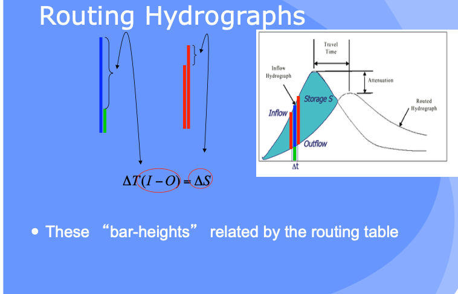
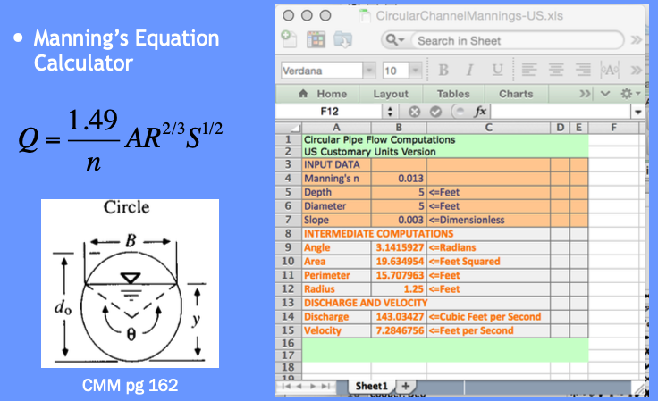
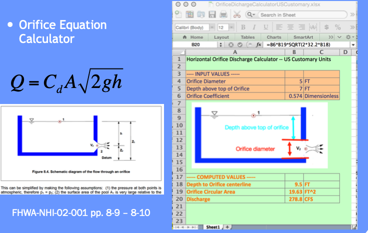
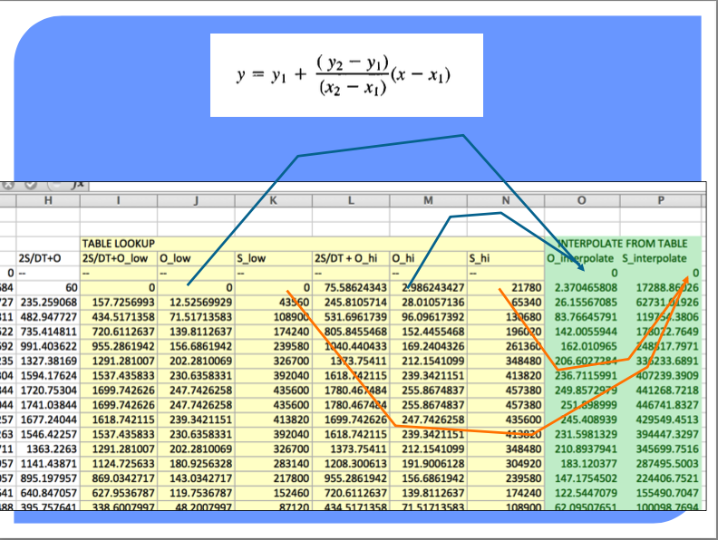
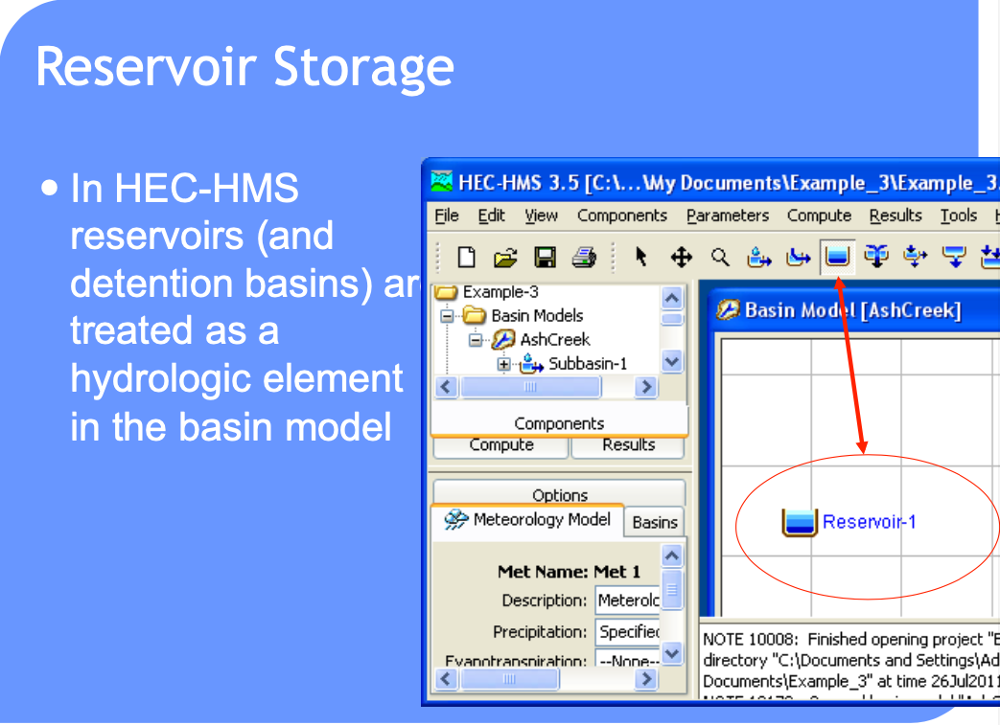

Hydrograph Routing - I#
Routing simulates movement of a discharge signal (flood wave) through reaches
Accounts for storage in the reach and flow resistance.
Allows modeling of a basin comprised of interconnected sub-basins
Hydraulic routing – uses continuity and momentum (St. Venant Equations)
Hydrologic routing – uses continuity equation
[insert some images]
Routing-Hydrologic and Hydraulic#
Problem:
you have a hydrograph at one location (I)
you have reach characteristics (S = f(I,O))
Need:
a hydrograph at different location (O)
This is a “routing” situation. The “reach” can be a stream, river, reservoir or some similar feature


The bar heights (volumes in storage, entering, and leaving the hydrologic reach) are quantified in a routing table - like a bank account that relates revenue, expenses, and account balance.
Hydrologic Routing#
Hydrologic routing techniques use the equation of continuity and some linear or curvilinear relation between storage and discharge within the river.
Methods include:
Lag Routing (no attenuation). Useful to get connectivity correct
Modified Puls (level pool routing). Useful for reservoirs
Muskingum-Cunge (almost a hydraulic model). Useful to approximate stream/river behavior without true “hydraulics” considerations
Level Pool Routing#
Technique to approximate the outflow hydrograph passing through a reservoir with the pool (water surface) always level.
Uses a reach (reservoir) mass balance equation
and a storage-outflow relationship.
Variable names are typically changed:
\(Q_{in} => I_t\) and \(Q_{out} => O_t\)
So the reach mass balance is
The time averaged values are taken at the beginning and end of the time interval, and the first-order difference quotient is used to approximate the rate of change in storage.
The reach mass balance is then

Then some of that algebra stuff ….

More algebra stuff ….
Some more algebra still and recognize need to deal with two unknowns …

The storage-outflow function leverages hydraulics where possible. For example flow through holes (orifice flow), over spillways and weirs, and simplified culvert flow situations.


Use outlet-works hydraulics, and depth-area-storage to build a storage-outflow function
Once we have that function, then build an auxiliary function (tabulation) called the storage-indication curve (function)
here \(g\) is some function.
Once have the storage-indication curve then can use the reach mass balance to estimate the numerical value of :
Then use the storage-indication curve to find the value of outflow, subtract that from the result above, and now have both the end-of-interval outflow and storage.
Example – Similar to CMM 8.2.1 pg 247-252; but
Show how the storage-indication curve derived using hydraulics
Illustrate use of spreadsheet programming needed to make the actual computations

Tasks:
Build a depth-storage table
Build a depth-outflow table
From 0 -5 feet deep use Manning’s equation in a circular conduit
From 5+ to 12 feet deep use Orifice equation (neglecting frictional losses)
Save a depth-storage-outflow table for use in storage-indication curve
Build the routing table (apply the reach mass balance)
For depth-outflow here is a Manning’s calculator.

Here is an orifice calculator.

Use these and basin geometry to build depth-storage outflow table.

Copy the depth-storage-outflow to the routing table (we are going to build) – we need it as a tabulation so we can use INDEX and MATCH to get values from the table for interpolation (Eq. at bottom CMM pg 249)



The full spreadsheet, with the interpolation function as an Excel 94 macro sheet (you could code in place, will have a few more columns) is on server as Routing Example.
Such computations are a lot easier to perform in HEC-HMS because it handles (1) building the routing table and (2) selecting a decent time step
Can also use level pool routing for a stream reach (next meeting).
Reservoir Concepts#
Reservoir
A pond, lake, or basin, either natural or artificial, for the storage, regulation, and control of water.
Regulated reservoir
Outflow controlled by moveable gates and valves.
Head, and valve settings determine outflow.
Unregulated reservoir.
Outflow controlled by fixed weirs and orifices.
Head and constructed weir height determine outflow.
Reservoir Storage#
Storage Representations≈
Storage vs. Discharge
Storage vs. Elevation
Surface Area vs. Elevation

Discharge Representations
Spillways, Weirs
Orifices, Sluice gates
Pumps
Dam Breach
HEC-HMS Constructs#



Routing-channel and reservoir#
Reservoir routing
Account for storage in a reservoir
Unique storage-discharge relationship
Channel routing
Account for storage in channel as well as travel time
Storage-discharge relation in channel is non-unique
Can treat channel as a series of reservoirs to mitigate looped effect.